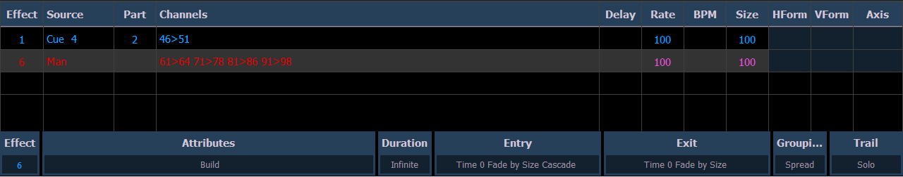
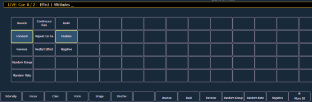

To view the effects currently running, you may press [Displays]>{Effect Status} to open the effect status display in the CIA.
This display shows you any currently running effects and gives you the ability to edit the effect while running. When an effect is selected, the encoders and encoder screen change to allow you to manipulate the effect according to rate, size, horizontal form, vertical form, and axis.
For Example:
To edit an effect, select the effect using the command line or select it directly from the CIA.
The encoder screen and softkeys will repaint so that they now control the five attributes in the columns of the effect status display:
Use the encoders or softkeys to adjust the effects while watching the effect on stage.
For Example:
Effect 1 is a step effect with the On State set to 50 and the Off State set to 10. If Size is set to 50, the On State will be set to 50% of 50 and the Off State will be 50% of 10. So On would be 25 and Off would be 5.

The effect itself can be accessed for editing from this display by pressing {Edit} - any changes made directly in the effect status display are made to the effect itself and must be stored. Cue level overrides also must be stored or updated to the required cue, but do not impact the basic effect itself.
Effect attributes modified in the effect status display can be reset to their previous values using the softkeys:
The properties of an effect that can be modified at a cue or sub level will display at the bottom of the Effect Status display and in the Effect Channel Display (which is access by pressing [Shift] & [Effect]). Click on a column to make changes from a list of available options.
Several color indicators are used in the Effect Status Display. Those colors and their meanings are:
Clicking on the Attributes column will open the Effect Attribute Override display. From that display, you can access most of the same properties as those found in the Effect Editor. This display allows you to make modifications to properties, and store those modifications in a cue or submaster.

{Restart Effect} is an atrribute that can only be accessed from this display. When enabled, {Restart Effect} will cause an effect to restart whenever the cue is fired. This attribute is applied to the cue that the effect is stored in and not in the effect itself.
Note: {Repeat on Go} is similar to {Restart Effect} but it is applied to the effect. For more information on {Repeat on Go}, see Effects Editor .